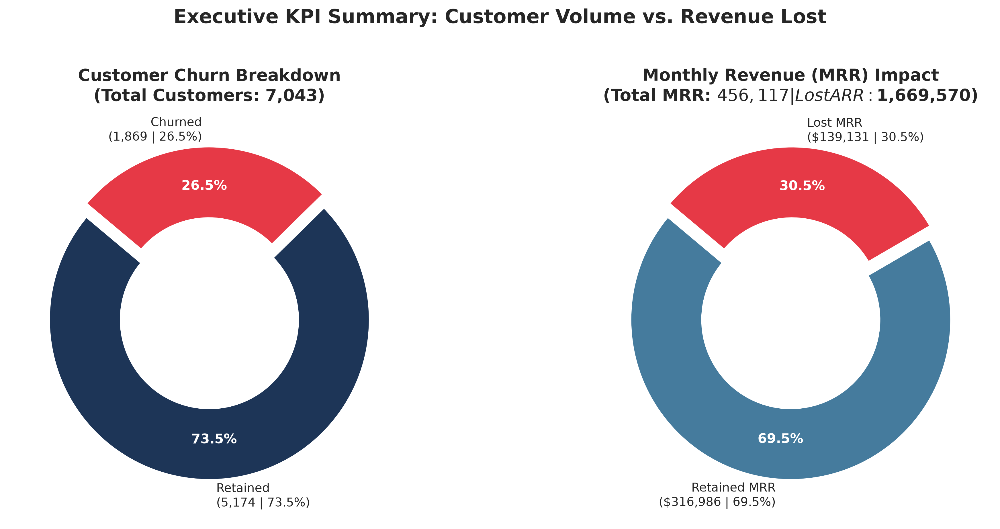
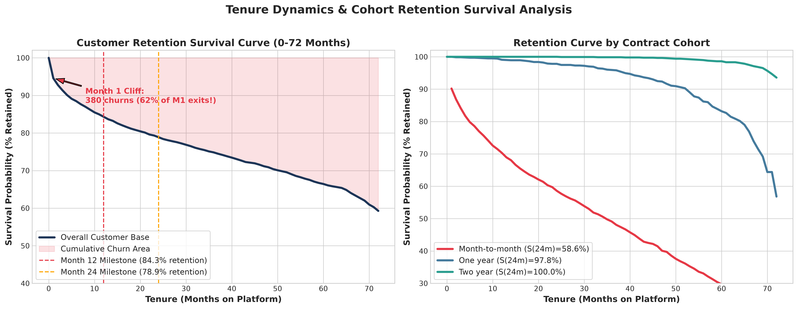
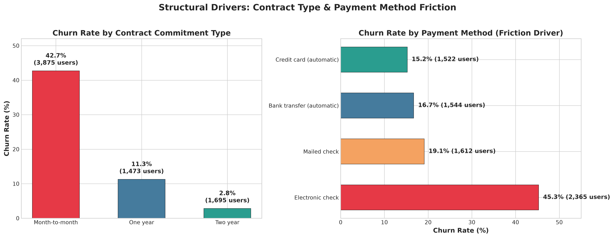
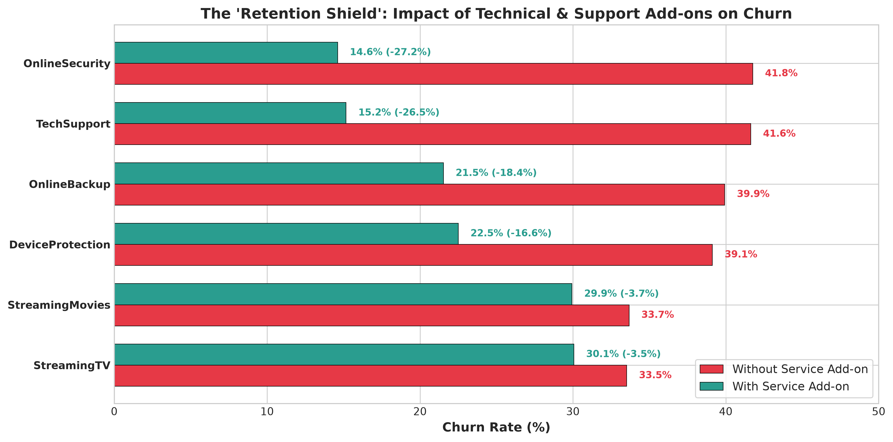
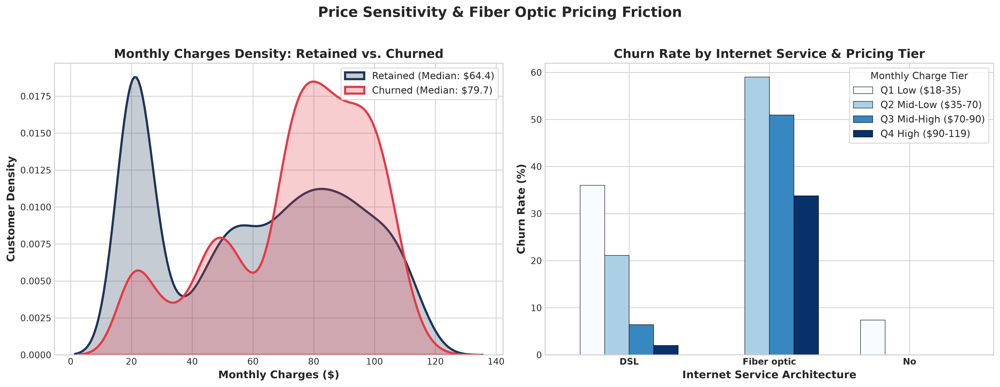
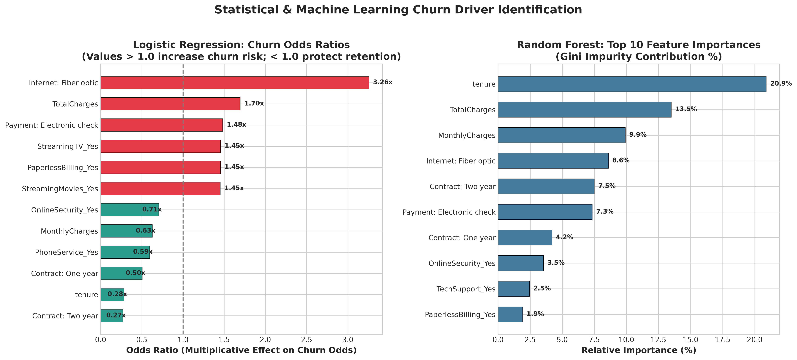
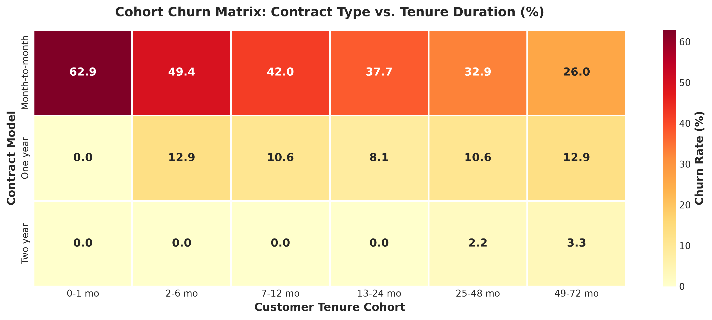

An end-to-end, production-grade analytics study examining customer subscription dynamics, tenure survival curves, cohort drop-offs, and high-impact retention playbooks.
Sample records from the Telco Customer Churn dataset. Scroll horizontally to view all columns.
| Customer ID | Gender | Senior Citizen | Partner | Dependents | Tenure | Phone Service | Multiple Lines | Internet Service | Online Security | Online Backup | Device Protection | Tech Support | Streaming TV | Streaming Movies | Contract | Paperless Billing | Payment Method | Monthly Charges | Total Charges | Churn |
|---|---|---|---|---|---|---|---|---|---|---|---|---|---|---|---|---|---|---|---|---|
| 7590-VHVEG | Female | 0 | Yes | No | 1 | No | No phone service | DSL | No | Yes | No | No | No | No | Month-to-month | Yes | Electronic check | 29.85 | 29.85 | No |
| 5575-GNVDE | Male | 0 | No | No | 34 | Yes | No | DSL | Yes | No | Yes | No | No | No | One year | No | Mailed check | 56.95 | 1889.5 | No |
| 3668-QPYBK | Male | 0 | No | No | 2 | Yes | No | DSL | Yes | Yes | No | No | No | No | Month-to-month | Yes | Mailed check | 53.85 | 108.15 | Yes |
| 7795-CFOCW | Male | 0 | No | No | 45 | No | No phone service | DSL | Yes | No | Yes | Yes | No | No | One year | No | Bank transfer (automatic) | 42.3 | 1840.75 | No |
| 9237-HQITU | Female | 0 | No | No | 2 | Yes | No | Fiber optic | No | No | No | No | No | No | Month-to-month | Yes | Electronic check | 70.7 | 151.65 | Yes |
Showing 5 sample rows. Open the full CSV dataset (7,043 records).
Explore the visual analysis below, covering churn and revenue, customer survival, contract and payment friction, service add-ons, pricing, and the strongest churn drivers.






